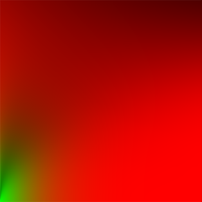

在上一篇文章中，我们讨论了PBR管线的基础理论，以及实现了场景中直接光（点光源/方向光源）照明的计算，对比与Blinn-Phong模型，PBR使用了微平面理论来对现实世界建模，而在BRDF项计算中，使用了法线分布函数/几何函数/菲涅尔方程构成的BRDF方程来计算光线对某种材质最终输出光照的影响。
但单纯看直接光照明，PBR管线似乎跟上一个世代的效果差不多，真正让PBR得到超越上一个世代效果的，是其环境光照明部分，所谓的动态全局光照的实体
首先我们来重新看下，在直接光照明下，我们的渲染方程：
这里我们只考虑了场景中的直接光源，但除了直接光源，场景中还会有来自环境本身的光源，如下图所示
场景中的环境光照是指，来自环境中各个方向的光源，照射到物体，然后反射到观察者方向的照相机中，在实际中，要计算总的反射光，我们会对于场景中的每个片断点，计算以片断点中法向量n为轴的半球体中所有入射光的总和：
而在数学上，我们会使用半球积分来计算场景中所有环境光的总和：
可以看到因为是对所有方向入射光做计算，因此我们的被积变量是\(w_{i}\)，另外，如果我们将公式整理简化一下表达：
（这里\(p\)是要计算的片段点，\(w_{o}\)是出射光的方向，\(w_{i}\)是入射光的方向，\(n\)则是法线，\(f_{r}\)则是BRDF）
可以看出来，这个方程可以看做是标准渲染方程的一个近似解
完整的PBR渲染方程
在加上了环境光之后，对于场景中某一点\(p\)，想要得到最终的光照输出\(L\)，完整的PBR渲染方程就变成了这样：
可以看到要真正计算完整的光照，外面是一个半球积分，然而，这个半球积分并没有解析解，而计算机是离散的，所以我们通常会采用某种采样的方法，来近似计算积分的值：
int steps = 100;
float sum = 0.0f;
vec3 P = ...;
vec3 Wo = ...;
vec3 N = ...;
float dW = 1.0f / steps;
for(int i = 0; i < steps; ++i)
{
vec3 Wi = getNextIncomingLightDir(i);
sum += Fr(p, Wi, Wo) * L(p, Wi) * dot(N, Wi) * dW;
}
为了计算这个积分的近似值，我们再将积分函数展开：
因为积分中漫反射跟高光部分是加法，我们可以对积分进行拆解：
于是我们将积分拆解成了漫反射部分跟高光部分，我们拆开来，再将公式展开：
则漫反射部分为：
高光部分为：
以上是渲染的方程，而在具体的工程实现上，我们对场景中环境光源的模拟，则使用所谓的Imaged Based Lighting(IBL)，即为基于图片的光照，通过在场景中添加环境贴图，也就是cubemap，作为环境中的光源的采样来源，然后再来照明物体
接下来我们再分别对漫反射和高光部分的光照分别求解
漫反射环境光照
首先，对于场景中的某一点，漫反射部分光照的积分公式为：
我们先把常量部分拆出来：
因为计算机是离散的，要直接计算这个积分是不可能的，因此，我们通过连续采样，然后计算平均值的方法，来近似的计算这个积分的值，我们参考这里的推导：
首先，我们将半球积分，转换成为普通的半球二重积分：
其中\(\theta _{i}\)则为光线方向跟半球法线方向的夹角
然后，对于积分，计算机中常见的计算方式是，使用蒙特卡洛方法来近似计算，令我们在球坐标系下的两个方向上采样数为\(N_{1}\)和\(N_{2}\)，代入如下：
消去多余项之后则如下
我们稍微简化一下表达，令\(c=diffuse\)：
得到了这个公式之后，我们实现就很明确了，因为想要计算的是环境的漫反射光照，因此：
- \(L_{i}\) 可以采样为环境中天空盒纹理中的颜色作为光照来源，这就是字面意义的基于图片的光照，对于场景中的一点我们都通过积分计算得到了来自半球上各个方向的光照，对于PBR管线来说，需要在线性空间计算光照，因此天空盒的纹理必须是HDR图片，对于GLES来说，就是GL_RGB16F的颜色格式，否则最终渲染的结果，对比度会明显不够
- 对于这个公式，我们可以在当前片断方向周围进行连续采样来计算积分，采样次数越多，积分结果越准确
- 最终，我们可以通过对天空盒纹理上的每个片断进行各个方向上的连续采样，将得到的结果存储在另外一张cubemap纹理中，最终直接采样这张纹理即可作为环境中的漫反射光照了
上面计算的代码如下
vec3 N = normalize(WorldPos);
vec3 irradiance = vec3(0.0);
// tangent space calculation from origin point
vec3 up = vec3(0.0, 1.0, 0.0);
vec3 right = cross(up, N);
up = cross(N, right);
float sampleDelta = 0.025;
float nrSamples = 0.0f;
for(float phi = 0.0; phi < 2.0 * PI; phi += sampleDelta)
{
for(float theta = 0.0; theta < 0.5 * PI; theta += sampleDelta)
{
// spherical to cartesian (in tangent space)
vec3 tangentSample = vec3(sin(theta) * cos(phi), sin(theta) * sin(phi), cos(theta));
// tangent space to world
vec3 sampleVec = tangentSample.x * right + tangentSample.y * up + tangentSample.z * N;
irradiance += texture(environmentMap, sampleVec).rgb * cos(theta) * sin(theta);
nrSamples++;
}
}
irradiance = PI * irradiance * (1.0 / float(nrSamples));
FragColor = vec4(irradiance, 1.0);
将上面预采样的结果存储在另外一张cubemap纹理中，而在主shader中，我们对场景漫反射的采样只需要这样子计算就可以了：
vec3 irradiance = texture(irradianceMap, N).rgb;
vec3 diffuse = irradiance * albedo;
预计算之后，我们得到了的纹理大概是这个样子的：

做了积分之后，看出来图片跟类似做了卷积之后的结果有点类似，直接对右边图片采样，我们就可以得到对于场景中一点得到各个方向上漫反射的光照结果了，下图就是加了漫反射之后，在金属度为1.0，不同粗糙度下的渲染结果：

可以看到，因为有了漫反射光照，我们渲染的结果比原来稍微亮了一些
另外，除了直接计算，我们也可以利用cmft来生成这张预计算贴图：
cmft --input "xx.hdr" \
--filter irradiance \
--srcFaceSize 0 \
--dstFaceSize 256 \
--outputNum 1 \
--output0 "xx_irradiance" \
--output0params dds,bgra8,cubemap
这里最终会生成一张DDS格式的纹理，不过，在Android直接使用会有问题，这里会在文章后面说下这里的坑
高光环境光照
接下来我们再来继续实现高光部分，首先，我们再来看下高光部分的渲染方程为：
我们稍微简化下表达，把BRDF部分收回去：
可以看出来高光部分的积分要比漫反射部分复杂得多，无论是直接求解或者是直接应用蒙特卡洛积分计算都会变得相当复杂，而在很多游戏引擎中，为了求解，都会对这个积分进行拆解，变成两个积分的乘积来近似，这种方法叫做Split Sum Approximation，拆解之后，我们的积分变成了这样子：
因此，我们的高光部分积分，就分成了两个部分
预过滤环境贴图（Pre-filtered environment map）
类似针对漫反射光照的处理一样，对这个积分的计算，我们也采用蒙特卡洛积分来近似计算，但对于高光反射，我们会针对不同的粗糙度，生成不同大小的预计算纹理贴图，用来作为不同粗糙度下高光的环境光反射，这同样符合物理结果，粗糙度越高，对于高光反射越弱。而对于GLES来说，最合理的做法就是把不同粗糙度下的预计算结果存储在不同级别的mipMap level中，在使用的时候，再根据材质粗糙度插值来选取对应mipmap level的纹理：

而在计算处理上，虽然我们也可以直接类似漫反射光照那样子，直接在半球空间内均匀采样然后再求值平均，但对于高光反射来说，由于表面粗糙度的影响，不同粗糙度的表面对光线的反射输出也不同

可以看出来粗糙度越高的表面，反射的光线越分散，结合PBR的微表面模型，可以看出来对于某个片断点，高光反射的光线分布在半程向量的周围，因此我们可以结合粗糙度，以及法线分布函数，让计算时候的采样向量收敛在一个区间内，这就是重要性采样，结合蒙特卡洛方法的公式如下:
其中\(pdf(x)\)为概率密度函数
因此，在得到采样点之后，我们的进行重要性采样计算代码为：
vec3 ImportanceSampleGGX(vec2 Xi, vec3 N, float roughness)
{
float a = roughness*roughness;
float phi = 2.0 * PI * Xi.x;
float cosTheta = sqrt((1.0 - Xi.y) / (1.0 + (a*a - 1.0) * Xi.y));
float sinTheta = sqrt(1.0 - cosTheta*cosTheta);
// from spherical coordinates to cartesian coordinates - halfway vector
vec3 H;
H.x = cos(phi) * sinTheta;
H.y = sin(phi) * sinTheta;
H.z = cosTheta;
// from tangent-space H vector to world-space sample vector
vec3 up = abs(N.z) < 0.999 ? vec3(0.0, 0.0, 1.0) : vec3(1.0, 0.0, 0.0);
vec3 tangent = normalize(cross(up, N));
vec3 bitangent = cross(N, tangent);
vec3 sampleVec = tangent * H.x + bitangent * H.y + N * H.z;
return normalize(sampleVec);
}
这里我们先得到的采样向量，然后计算出对应世界坐标系下的向量作为半程向量返回
这里我们还需要生成一个随机向量Xi，而对于蒙特卡洛积分来说，我们需要一种叫做低差异序列的特殊随机数：

而在这里我们则使用所谓的Hammersley序列来生成，代码如下
// ----------------------------------------------------------------------------
// http://holger.dammertz.org/stuff/notes_HammersleyOnHemisphere.html
// efficient VanDerCorpus calculation.
float RadicalInverse_VdC(uint bits)
{
bits = (bits << 16u) | (bits >> 16u);
bits = ((bits & 0x55555555u) << 1u) | ((bits & 0xAAAAAAAAu) >> 1u);
bits = ((bits & 0x33333333u) << 2u) | ((bits & 0xCCCCCCCCu) >> 2u);
bits = ((bits & 0x0F0F0F0Fu) << 4u) | ((bits & 0xF0F0F0F0u) >> 4u);
bits = ((bits & 0x00FF00FFu) << 8u) | ((bits & 0xFF00FF00u) >> 8u);
return float(bits) * 2.3283064365386963e-10; // / 0x100000000
}
// ----------------------------------------------------------------------------
vec2 Hammersley(uint i, uint N)
{
return vec2(float(i)/float(N), RadicalInverse_VdC(i));
}
在得到了采样向量之后，我们就可以最终计算出预计算的结果了：
vec3 N = normalize(WorldPos);
// make the simplyfying assumption that V equals R equals the normal
vec3 R = N;
vec3 V = R;
const uint SAMPLE_COUNT = 1024u;
vec3 prefilteredColor = vec3(0.0);
float totalWeight = 0.0;
for(uint i = 0u; i < SAMPLE_COUNT; ++i)
{
// generates a sample vector that's biased towards the preferred alignment direction (importance sampling).
vec2 Xi = Hammersley(i, SAMPLE_COUNT);
vec3 H = ImportanceSampleGGX(Xi, N, roughness);
vec3 L = normalize(2.0 * dot(V, H) * H - V);
float NdotL = max(dot(N, L), 0.0);
if(NdotL > 0.0)
{
// sample from the environment's mip level based on roughness/pdf
float D = DistributionGGX(N, H, roughness);
float NdotH = max(dot(N, H), 0.0);
float HdotV = max(dot(H, V), 0.0);
float pdf = D * NdotH / (4.0 * HdotV) + 0.0001;
float resolution = 512.0; // resolution of source cubemap (per face)
float saTexel = 4.0 * PI / (${RadianceMipmapLevel - 1}.0 * resolution * resolution);
float saSample = 1.0 / (float(SAMPLE_COUNT) * pdf + 0.0001);
float mipLevel = roughness == 0.0 ? 0.0 : 0.5 * log2(saSample / saTexel);
prefilteredColor += texture(environmentMap, L, mipLevel).rgb * NdotL;
totalWeight += NdotL;
}
}
prefilteredColor = prefilteredColor / totalWeight;
FragColor = vec4(prefilteredColor, 1.0);
可以看到，在计算的时候，我们针对采样的半程向量，对其反射光线以及视角方向进行了N=V=R的假设，这个是因为在预计算的场景下，我们没有办法计算出真实的视角方向以及法线向量，只能进行一定的假设了，然后，按照反射模型倒推出了采样的光线方向，然后再对天空盒纹理采样。
另外，注意到对于每次采样，我们都乘以了NdotL作为权重，因为在NdotL<0的情况下，这个时候这个光线是对高光没有贡献的
（这里数学推导过于复杂，我这里也没完全搞懂，有兴趣也可以继续看看这篇文章了解下）
而在采样的时候，对天空盒纹理的不同miplevel进行了采样，由于这段代码来自这里，不过在Android上，我发现有没有按照粗糙度对天空盒mipmap level采样似乎没有太大差别，这里原因还没有深究
另外，跟漫反射部分一样，这里的贴图，我们同样可以利用cmft来生成：
cmft --input "xxx.hdr" \
::Filter options \
--filter radiance \
--srcFaceSize 256 \
--excludeBase false \
--mipCount 7 \
--glossScale 10 \
--glossBias 3 \
--lightingModel blinnbrdf \
--edgeFixup none \
--dstFaceSize 256 \
::Processing devices \
--numCpuProcessingThreads 4 \
--useOpenCL true \
--clVendor anyGpuVendor \
--deviceType gpu \
--deviceIndex 0 \
::Aditional operations \
--inputGammaNumerator 2.2 \
--inputGammaDenominator 1.0 \
--outputGammaNumerator 1.0 \
--outputGammaDenominator 2.2 \
--generateMipChain false \
::Output \
--outputNum 1 \
--output0 "xxx" \
--output0params dds,bgra8,cubemap \
--output1 "xxx_preview" \
--output1params tga,rgba8,cubemap
环境光BRDF（Environment BRDF）
而对于积分的另外一部分，则为包含了BRDF部分的高光环境计算，这里我们同样可以类似上面那样，进行重要性采样，然后计算出一个预先采样的纹理，这这篇文章中有比较详细的描述，经过对积分的公式变换之后，我们将第二部分的积分公式变换成这个形式：
这个公式可以表达成这个形式：
于是我们可以预计算出\(Scale\)跟\(Bias\)的值，把结果存储在一张纹理上，计算出来的结果大概是这样子的：

这是一张LUT纹理，使用NdotV以及roughness作为纹理坐标，采样就可以得到上面的计算结果，然后配合上面生成高光反射贴图，就可以得到高光部分的反射：
vec3 radiance = textureLod(radianceMap, R, roughness * MAX_RADIANCE_LOD).rgb;
vec2 brdf = texture(envBrdfMap, vec2(max(dot(N, V), 0.0), roughness)).rg;
vec3 specular = radiance * (F * brdf.x + brdf.y);
但在移动平台上，更为经济的做法是，对这个积分本身做数值拟合，在PBR白皮书，有看到介绍在使命召唤——黑色行动2中便使用了这个做法：
vec3 EnvDFGLazarov( vec3 specularColor, float gloss, float ndotv ) {
//# [ Lazarov 2013, "Getting More Physical in Call of Duty: Black Ops II" ]
//# Adaptation to fit our G term.
vec4 p0 = vec4( 0.5745, 1.548, -0.02397, 1.301 );
vec4 p1 = vec4( 0.5753, -0.2511, -0.02066, 0.4755 );
vec4 t = gloss * p0 + p1;
float bias = clamp( t.x * min( t.y, exp2( -7.672 * ndotv ) ) + t.z, 0.0, 1.0);
float delta = clamp( t.w, 0.0, 1.0);
float scale = delta - bias;
bias *= clamp( 50.0 * specularColor.y, 0.0, 1.0);
return specularColor * scale + bias;
}
其中specularColor则为F0，而具体的推导可以在这篇文章中得到答案，其实就是在Mathematica中进行不停的拟合得到的结果，但对于手机来说，省去了一张纹理的消耗，是一个不错的优化
使用了这个方法来计算解析值之后，高光部分的反射结果就改成这样子计算出来：
vec3 radiance = textureLod(radianceMap, R, roughness * MAX_RADIANCE_LOD).rgb;
vec3 envBrdf = EnvDFGLazarov(F0, metallic, max(dot(N, V), 0.0));
vec3 specular = radiance * (F * envBrdf);
组合渲染输出
在得到高光以及漫反射部分的渲染结果之后，组合最终输出就很简单了：
vec3 ambient = (kD * diffuse + specular) * ao;
vec3 color = ambient + Lo;
同样，因为显示到普通屏幕上，我们需要对输出进行色调映射跟Gamma校正：
// HDR tonemapping
color = color / (color + vec3(1.0));
// gamma correct
color = pow(color, vec3(1.0/2.2)
下面便是在加了高光跟漫反射环境光之后，在金属度为1，不同粗糙度下的渲染结果：
可以看出来，在加了高光反射之后，我们的渲染结果质量有了很明显的提升
带上纹理贴图的输出
在PBR的管线下，设计师可以针对金属度以及粗糙度分别建模贴图，从而给模型提供像素级别精度的参数调整，结合漫反射贴图以及法线贴图，我们就可以得出非常漂亮的渲染结果了：
Notes
最后，我们来聊聊实际实现的时候，遇到一些问题：
DDS格式的问题
cmft工具导出来的预计算贴图格式，一般是DDS，而在Android上，是没有办法直接通过原生接口解码DDS格式的，另外，cmft中导出的DDS格式也没办法指定支持rgba16这种颜色格式，会导致渲染出来对比度过低，所以，要做预计算贴图，靠谱的方法还是自己写个工具来计算
HDR格式在Android的支持
HDR格式的图片，同样，在Android系统中原生接口中是没办法直接解码的，但png有支持到64位的颜色格式，所以我们可以先将hdr格式图片转成png再来做贴图的预计算
本文的代码最后也host在了这个仓库上：AndroidPBR
本文可能有诸多错漏，作为一名图形学小白，数学功底也比较有限，各位看客求轻喷